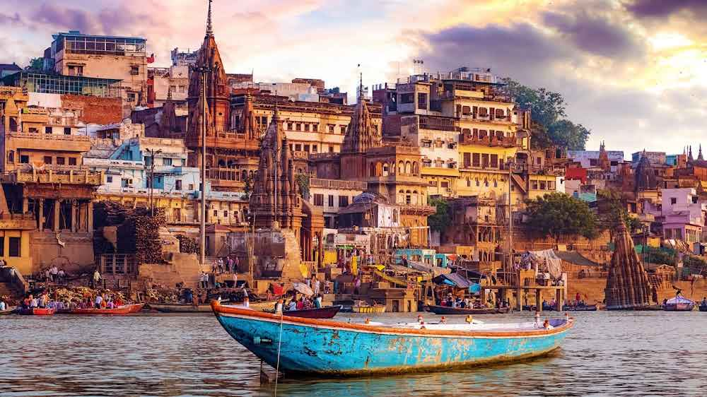

Northern India contains the state of Uttar Pradesh. With more than 241 million people, it is both the most populous state in India and the most populous country subdivision globally. It is home to more people than all but four of the other countries outside of India (China, the United States, Indonesia, and Pakistan) and makes up 16.5% of India's total population, or about 3% of the world's total population. The state has borders with Madhya Pradesh, Chhattisgarh, and Jharkhand to the south, Uttarakhand and Nepal to the north, Bihar to the east, Rajasthan to the west, and Haryana, Himachal Pradesh, and Delhi to the northwest. With 7.3 percent of India's total territory, it is the fourth-largest Indian state by area. The state capital is Lucknow with Prayagraj being the judicial capital. It is divided into 18 divisions and 75 districts.
Uttar Pradesh ranks first in domestic tourist arrivals among all states of India. Some 44,000 foreign tourists arrived in the state in 2021, and almost 110 million domestic tourists. The Taj Mahal attracts some 7 million people a year, earning almost ₹78 crore (US$9.1 million) in ticket sales in 2018–19. The state is home to three World Heritage Sites: the Taj Mahal, Agra Fort, and the nearby Fatehpur Sikri.


Religious tourism plays a significant role in the state's economy. Varanasi is a major religious hub and one of the seven sacred cities (Sapta Puri) in Hinduism and Jainism. Vrindavan is considered to be a holy place for Vaishnavism.Sravasti generally considered as revered sites in Buddhism, believed to be where the Buddha taught many of his Suttas (sermons). Owing to the belief as to the birthplace of Rama, Ayodhya (Awadh) has been regarded as one of the seven most important pilgrimage sites. Millions gather at Prayagraj to take part in the Magh Mela festival on the banks of the Ganges. This festival is organised on a larger scale every 12th year and is called the Kumbh Mela, where over 10 million Hindu pilgrims congregate in one of the largest gatherings of people in the world.



Buddhist attractions in Uttar Pradesh include stupas and monasteries. The historically important towns of Sarnath where Gautama Buddha gave his first sermon after his enlightenment and died at Kushinagar; both of which are important pilgrimage sites for Buddhists. Also at Sarnath are the Pillars of Ashoka and the Lion Capital of Ashoka, both important archaeological artefacts with national significance. At a distance of 80 km (50 miles) from Varanasi, Ghazipur is famous not only for its Ghats on the Ganges but also for the tomb of Lord Cornwallis, the 18th-century Governor of East India Company ruled Bengal Presidency. The tomb is maintained by the Archaeological Survey of India.[285] Jhansi Fort, located in the city of Jhansi, is closely associated with the "First War of Indian Independence", also known as the "Great Rebellion" or the Indian Rebellion of 1857. The fort is constructed in accordance with medieval Indian military architecture, featuring thick walls, bastions, and various structures within its complex. The architecture reflects a blend of Hindu and Islamic styles.